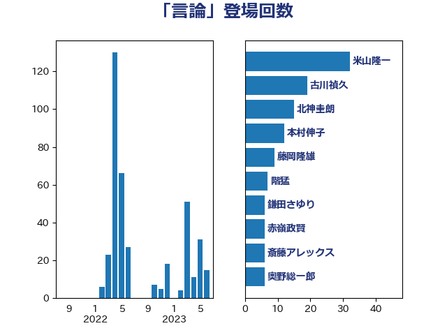

単語「言論」

| 米山隆一 | 立憲民主党 | 32 回 |
| 古川禎久 | 自由民主党 | 19 回 |
| 北神圭朗 | 無所属 | 15 回 |
| 本村伸子 | 日本共産党 | 12 回 |
| 藤岡隆雄 | 立憲民主党 | 9 回 |
| 階猛 | 立憲民主党 | 7 回 |
| 鎌田さゆり | 立憲民主党 | 6 回 |
| 赤嶺政賢 | 日本共産党 | 6 回 |
| 斎藤アレックス | 国民民主党 | 6 回 |
| 奥野総一郎 | 立憲民主党 | 6 回 |
| 國重徹 | 公明党 | 6 回 |
| 前川清成 | 日本維新の会 | 6 回 |
| 長妻昭 | 立憲民主党 | 5 回 |
| 野田佳彦 | 立憲民主党 | 5 回 |
| 小西洋之 | 立憲民主党 | 5 回 |
| 守島正 | 日本維新の会 | 5 回 |
| 鈴木庸介 | 立憲民主党 | 4 回 |
| 盛山正仁 | 自由民主党 | 4 回 |
| 櫛渕万里 | れいわ新選組 | 4 回 |
| 松原仁 | 立憲民主党 | 4 回 |
| 山添拓 | 日本共産党 | 4 回 |
| 小野泰輔 | 日本維新の会 | 4 回 |
| 大口善徳 | 公明党 | 4 回 |
| 高良鉄美 | 無所属 | 3 回 |
| 高市早苗 | 自由民主党 | 3 回 |
| 船田元 | 自由民主党 | 3 回 |
| 竹詰仁 | 国民民主党 | 3 回 |
| 田村智子 | 日本共産党 | 3 回 |
| 源馬謙太郎 | 立憲民主党 | 3 回 |
| 松本剛明 | 自由民主党 | 3 回 |
| 山下貴司 | 自由民主党 | 3 回 |
| 小沢雅仁 | 立憲民主党 | 3 回 |
| 宮本岳志 | 日本共産党 | 3 回 |
| 大島敦 | 立憲民主党 | 3 回 |
| 塩川鉄也 | 日本共産党 | 3 回 |
| 北側一雄 | 公明党 | 3 回 |
| 高木真理 | 立憲民主党 | 2 回 |
| 音喜多駿 | 日本維新の会 | 2 回 |
| 鈴木義弘 | 国民民主党 | 2 回 |
| 野田国義 | 立憲民主党 | 2 回 |
| 道下大樹 | 立憲民主党 | 2 回 |
| 荒井優 | 立憲民主党 | 2 回 |
| 芳賀道也 | 国民民主党 | 2 回 |
| 羽田次郎 | 立憲民主党 | 2 回 |
| 石橋通宏 | 立憲民主党 | 2 回 |
| 矢倉克夫 | 公明党 | 2 回 |
| 玉木雄一郎 | 国民民主党 | 2 回 |
| 林芳正 | 自由民主党 | 2 回 |
| 村田享子 | 立憲民主党 | 2 回 |
| 杉本和巳 | 日本維新の会 | 2 回 |
| 山田勝彦 | 立憲民主党 | 2 回 |
| 山本太郎 | れいわ新選組 | 2 回 |
| 山下芳生 | 日本共産党 | 2 回 |
| 小川淳也 | 立憲民主党 | 2 回 |
| 城井崇 | 立憲民主党 | 2 回 |
| 古賀之士 | 立憲民主党 | 2 回 |
| 丹羽秀樹 | 自由民主党 | 2 回 |
| 中西祐介 | 自由民主党 | 2 回 |
| 中山展宏 | 自由民主党 | 2 回 |
| 三木圭恵 | 日本維新の会 | 2 回 |
| 齊藤健一郎 | 無所属 | 1 回 |
| 青山大人 | 立憲民主党 | 1 回 |
| 足立康史 | 日本維新の会 | 1 回 |
| 葉梨康弘 | 自由民主党 | 1 回 |
| 篠原孝 | 立憲民主党 | 1 回 |
| 稲田朋美 | 自由民主党 | 1 回 |
| 福島伸享 | 無所属 | 1 回 |
| 福島みずほ | 社会民主党 | 1 回 |
| 福山哲郎 | 立憲民主党 | 1 回 |
| 石破茂 | 自由民主党 | 1 回 |
| 石垣のりこ | 立憲民主党 | 1 回 |
| 清水真人 | 自由民主党 | 1 回 |
| 浅田均 | 日本維新の会 | 1 回 |
| 沢田良 | 日本維新の会 | 1 回 |
| 櫻井周 | 立憲民主党 | 1 回 |
| 森本真治 | 立憲民主党 | 1 回 |
| 梅村みずほ | 日本維新の会 | 1 回 |
| 松川るい | 自由民主党 | 1 回 |
| 杉尾秀哉 | 立憲民主党 | 1 回 |
| 新藤義孝 | 自由民主党 | 1 回 |
| 川合孝典 | 国民民主党 | 1 回 |
| 岩谷良平 | 日本維新の会 | 1 回 |
| 山田宏 | 自由民主党 | 1 回 |
| 尾崎正直 | 自由民主党 | 1 回 |
| 宮口治子 | 立憲民主党 | 1 回 |
| 堀場幸子 | 日本維新の会 | 1 回 |
| 伊藤岳 | 日本共産党 | 1 回 |
| 伊藤俊輔 | 立憲民主党 | 1 回 |
| 伊波洋一 | 無所属 | 1 回 |
| 中野洋昌 | 公明党 | 1 回 |
| 中川正春 | 立憲民主党 | 1 回 |